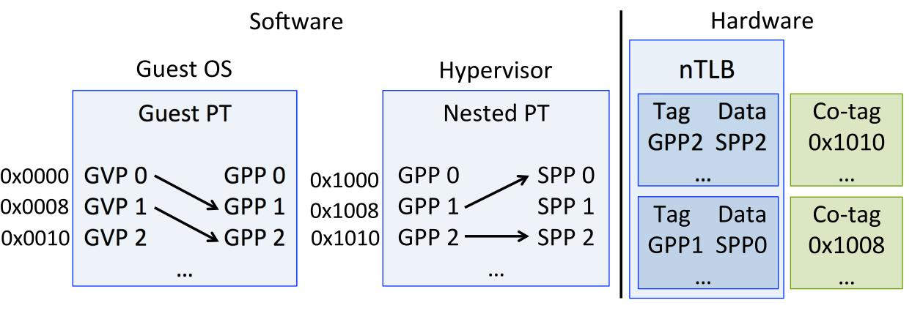
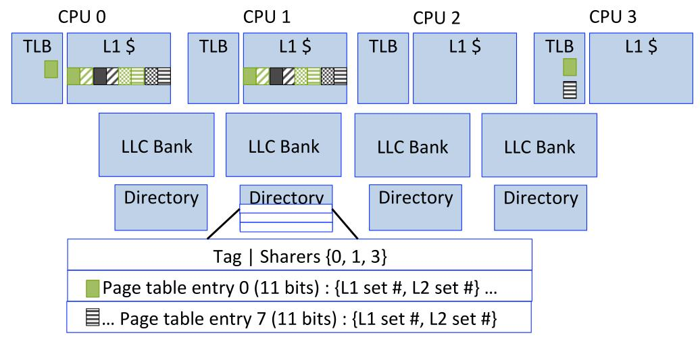
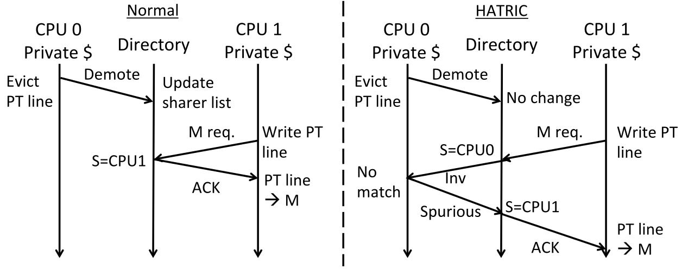

Hardware Translation Coherence for Virtualized Systems
Zi Yan Ján Veselý Guilherme Cox
Abhishek Bhattacharjee
Rutgers University
ISCA 2017
Problem
TLB shootdowns in Virtualized systems
Have to be perfomed
Memory defragmentation and Creating superpages
Page migration in NUMA systems
Page remappings in Heterogeneous Memories
Handled Synchronously by OS (Software)
Desirable properties of TLB shootdowns
Precise Invalidations
Precise target identification
Lightweight target side handling
Problems in Virtualized systems
GVP needed for Precise Invalidations
Hypervisors do imprecise target tracking
VM exits increase overheads
Hardware Translation Coherence for Virtualized Systems
Hardware based translation coherence
Does TLB coherence on top of Cache coherence
Adds Co-tags to translation structures
Co-tags
Stores SPA of Nested page table entries
Helps precisely identify invalidation entries
Only store part of the SPA to reduce area
They use 2 Byte co-tags
All PTEs in same cache line have same co-tags
PTW loads the Co-tags during page walks
Co-tags

Modification to cache coherence protocol
Modify the Directory based protocol
Tracks which lines are from page table pages using 1 bit
Coherence message relayed to Translation structures
TLBs invalidate entries with matching co-tags
Sharer's list interpreted differently for PTE cache lines
For Co-tag lookup, the directory entry also store set numebers for all 8 PTE entries
Modification to cache coherence protocol

Lazy sharer list updation

Benefits
Nested page table changes done entirely in Hardware
No IPIs, No VM intervention and No invlpg instructions
Rely on existing cache coherence protocols
Permits selective TLB flushes
Limitations
Directory entry evictions cause TLB backinvalidations
Only works for Host page table changes
Evaluations
Using a trace based simulator
Evaluation using KVM and Xen
Trace collected on Real system using Pin
Simulates high bandwidth Die Stacked DRAM
Use benchmarks from PARSEC, CloudSuite and SPEC
Use CACTI for energy measurements
Conclusions
0.2% area increase in all CPUs
Reduces runtime to 50-80% of runtime compared to baseline
5-10% perf boost compared to UNITD++ while being energy efficient